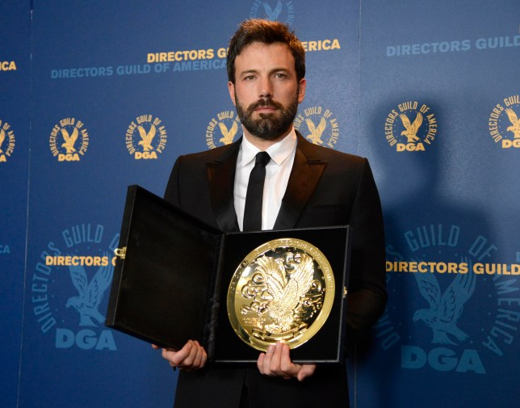
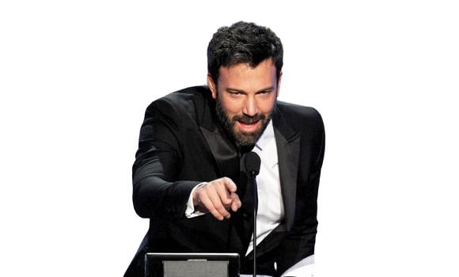

BIOGRAPHY

Bruce Wayne, the enigmatic billionaire of Gotham City, is a testament to the power of resilience and intellect. Born into the illustrious Wayne family, Bruce experienced tragedy at a young age when his parents were brutally murdered in front of him. This pivotal moment fueled his determination to eradicate crime and injustice from Gotham. Despite his immense wealth, Bruce sought education as a means to empower himself intellectually. Graduating with top honors from Princeton University, he further honed his skills by studying abroad, mastering various disciplines and languages. His insatiable thirst for knowledge led him to traverse the globe, learning from the world's foremost experts in criminology, martial arts, and detective work. Returning to Gotham, Wayne Enterprises, the multinational conglomerate founded by his family, became the stage for his dual life. As the CEO, Bruce utilized his business acumen to fund philanthropic endeavors and cutting-edge technologies. Though often seen as a charismatic playboy in the public eye, Bruce Wayne's true identity remains shrouded in mystery, a brilliant strategist and detective dedicated to making Gotham a safer place.
DISTINCTIONS
-

Wayne Foundation Humanitarian Award
Awarded to Bruce Wayne in recognition of his outstanding philanthropic contributions through the Wayne Foundation. This award highlights his dedication to improving the lives of Gotham's citizens through various charitable initiatives, from funding education programs to supporting community development projects.
-
Princeton University Distinguished Alumni Award
Presented to Bruce Wayne for his exceptional achievements and contributions to society after graduating with top honors from Princeton University. This award acknowledges his commitment to using his education and resources for the betterment of the world.
-
Gotham City Business Leader of the Year
Bruce Wayne received this accolade for his exemplary leadership as the CEO of Wayne Enterprises. The award recognizes his strategic vision, ethical business practices, and commitment to fostering innovation, which have contributed significantly to Gotham's economic development.
-
Global Humanitarian Medal
Awarded by an international organization, this medal honors Bruce Wayne 's global impact on humanitarian efforts. Whether responding to natural disasters or addressing socio-economic challenges, Wayne's philanthropic endeavors have earned him recognition on the global stage.
-
Martial Arts Excellence Award
Bestowed upon Bruce Wayne for his unparalleled proficiency in martial arts , this award acknowledges his dedication to mastering various combat disciplines during his extensive travels. Wayne's physical prowess and combat skills have played a crucial role in his crime-fighting activities.
-
Detective of the Year Award (Gotham City Police Department)
Recognizing Bruce Wayne's exceptional investigative skills and contributions to solving complex crimes, the Detective of the Year Award showcases his commitment to working alongside law enforcement to maintain peace and order in Gotham City.
-
Innovation in Technology Award
Presented to Bruce Wayne for his role in advancing technology through Wayne Enterprises. This award highlights his commitment to developing cutting-edge solutions that address societal challenges, from sustainable energy initiatives to advancements in crime -fighting technology.
-
Presidential Medal of Freedom
Awarded by the President of the United States, this prestigious medal honors Bruce Wayne for his extraordinary contributions to society, including his philanthropy, business leadership, and efforts to make a positive impact on both a national and global scale.

CONTRIBUTIONS TO GOTHAM CITY
-
Economic Development
As the CEO of Wayne Enterprises, Bruce has strategically invested in industries that contribute to Gotham's economic growth. His initiatives have stimulated job creation, attracting businesses to the city and helping it thrive economically.
-
Infrastructure Projects
Wayne Enterprises has been at the forefront of urban renewal projects . Bruce Wayne's commitment to revamping Gotham's infrastructure has led to the construction of modern buildings, bridges, and public spaces, transforming neglected areas into thriving districts.
-
Technology Innovation
Wayne Enterprises has played a key role in advancing technology in Gotham. Investments in cutting-edge research and development have not only positioned the city as a technological hub but have also improved the efficiency of public services.
-
Philanthropy
Through the Wayne Foundation, Bruce has been a leading philanthropist in Gotham. His charitable contributions have funded education programs, healthcare initiatives, and community development projects, uplifting the lives of many Gotham residents.
-
Affordable Housing Initiatives
Recognizing the housing challenges in Gotham, Wayne Enterprises has undertaken projects to promote affordable housing. Bruce Wayne's commitment to providing accessible housing options has contributed to the city's socio-economic diversity.
-
Crime Prevention Programs
Bruce Wayne has been a staunch supporter of crime prevention efforts . His collaborations with law enforcement agencies, funding for community policing initiatives, and support for programs addressing the root causes of crime have made Gotham safer for its residents.
-
Environmental Conservation
Wayne Enterprises has adopted eco-friendly practices, and Bruce Wayne has championed environmental conservation efforts. From green building projects to initiatives that reduce the carbon footprint, his commitment to sustainability has positively impacted Gotham's environment.
-
Arts and Culture Promotion
Understanding the importance of a vibrant cultural scene, Bruce Wayne has supported the arts in Gotham. His contributions to cultural events, art institutions, and historic preservation have enriched the city's cultural landscape.
-
Education and Training Programs
Wayne Enterprises has been actively involved in supporting education and vocational training programs. By investing in educational initiatives, Bruce Wayne has empowered Gotham's youth with the skills needed to contribute to the city's growth.